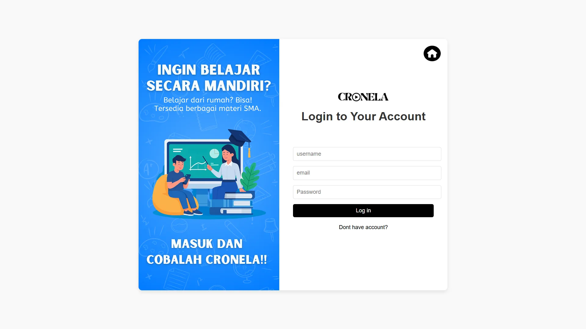
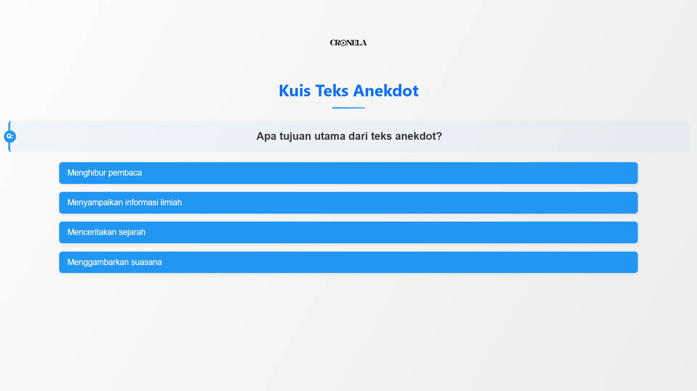

Website Pendidikan
CRONELA

Proses pembuatan diawali dengan mencari ide website yang akan berguna bagi banyak orang. Jadi kami membuat website pendidikan, yang di dalamnya berisikan video-video pendidikan dan juga berisi kuis interaktif yang dapat menguji kemampuan pengguna
Bagian yang cukup menantang dari projek ini adalah ketika membuat section register dan login, selain itu, membuat bagian kuis agar bisa menyimpan skor user juga merupakan tugas yang cukup menantang

